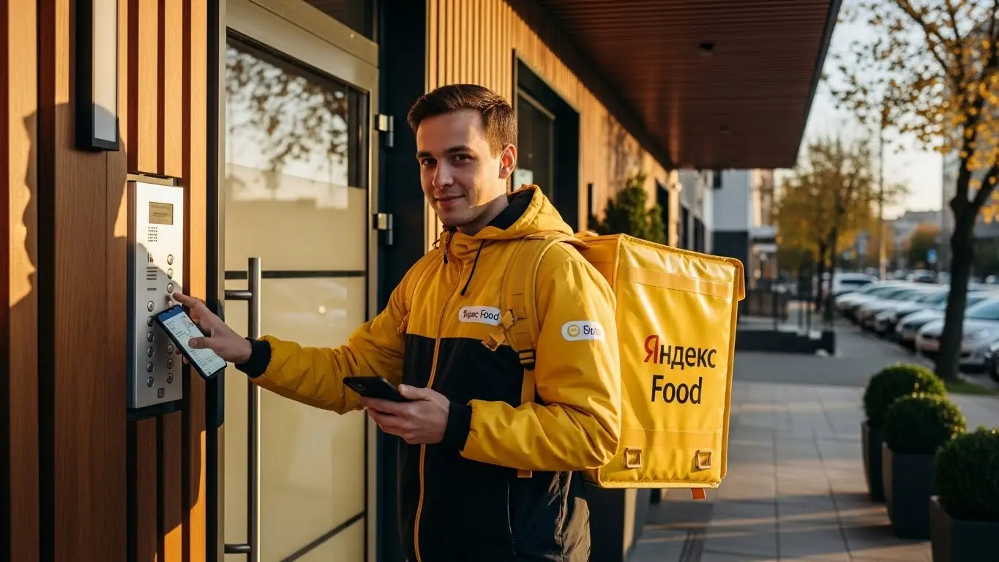

Доход курьера Яндекс Еда в Нальчике в 2025-2026: разбор условий
- Работа курьером Яндекс Еды в Нальчике: для кого эта вакансия и что вы получите
- Сколько вы будете зарабатывать курьером в Нальчике: калькулятор дохода и разбор выплат
- Реальный заработок курьера в Нальчике: смены и месячный доход
- График работы и форматы занятости
- Требования к кандидату и документы
- Самозанятость, налоги и юридическая чистота
- Пошаговое оформление и первый выход на линию в Нальчике
- Пешком, на вело или на авто: что выгоднее в Нальчике
- Районы, маршруты и «топовые» зоны заказов в Нальчике
- Безопасность, страховка, штрафы и оплата простоя
- Плюсы и возможные минусы работы курьером в Нальчике
- Реальные истории и отзывы курьеров из Нальчика
- Ответы на главные вопросы о работе курьером Яндекс Еды в Нальчике
- Короткие ответы на главные вопросы
- Итоги и ваш следующий шаг
Все города
Здорово, брат. Думаешь, работа курьером в Нальчике — это просто крутить педали и получать деньги? А как насчет пробок на проспекте Ленина в час пик, вечных ремонтов на Шогенцукова или заказов в Горную, куда на велосипеде не доедешь? Боишься, что убьешь машину на наших дорогах, а заработок съедят штрафы и бензин? Давай начистоту: я расскажу, как на самом деле устроена работа курьером Яндекс Еды в Нальчике, без рекламной шелухи и пустых обещаний.
Поверь, 90% новичков в Нальчике сливаются в первый же месяц. И не потому, что работа тяжелая, а потому что никто не объяснил им, что доход — это не просто цифра в приложении. Это твоя выручка минус бензин или ремонт велика, минус налог самозанятого, минус время, потраченное впустую в «мертвых» районах вроде Стрелки, когда весь спрос в Центре. Не зная этих тонкостей, ты будешь просто кататься по городу, теряя и время, и деньги.
В этом гиде мы всё разберём по косточкам. Я покажу на реальных примерах, сколько можно заработать в Нальчике пешком, на велосипеде и на авто. Мы посчитаем чистый доход с учетом всех расходов. Я расскажу, в каких районах и в какое время суток всегда есть заказы, а куда лучше не соваться. Выясним, как погода в Нальчике — от летнего зноя до зимней слякоти — влияет на заработок и как не нарваться на штрафы. А если ты хочешь сразу увидеть краткую сводку условий, воспользоваться калькулятором дохода и подать заявку, то вся информация про работу курьером Яндекс Еда в Нальчике есть на специальной странице.
Меня зовут Алексей. Я сам начинал с желтого рюкзака на улицах Нальчика, а сейчас у меня свой небольшой таксопарк-партнер. Так что я знаю эту кухню с обеих сторон — и как курьер, и как партнер. Никакой рекламы, только факты и советы, которые помогут тебе не наступать на грабли, а сразу начать зарабатывать. Готов? Тогда давай по порядку, сейчас всё разложу по полочкам.
Прежде чем нырять в детали, держи короткий навигатор по статье, чтобы сразу найти то, что тебе важнее всего.
Коротко о главном: что разберём по косточкам
В этой статье ты ТОЧНО узнаешь:
- Сколько реально можно заработать в Нальчике за смену на авто, велике или пешком, и что съест твой доход?
- В каких районах Нальчика (Центр, Горная, Стрелка) и в какое время суток всегда есть заказы с высоким коэффициентом?
- Что выгоднее для Нальчика — работать пешком, на велосипеде или на своей машине, и какие у каждого способа подводные камни?
- За что на самом деле снижают рейтинг и как не остаться без заказов из-за глупых ошибок новичка?
- Как устроена самозанятость, сколько платить налогов и почему это проще, чем кажется на первый взгляд?
- Как работает оплата простоя и почему она страхует тебя, когда заказов мало?
А если тебе некогда читать всю статью — переходи сразу к заключению, где ты найдёшь короткие ответы на все эти вопросы и указания, в каких разделах искать подробности.
А вот основные цифры и факты о работе курьером в Нальчике в одной картинке.
Работа курьером в Нальчике: ключевые цифры
Доход в час
350-500 ₽
В пиковые часы с учетом бонусов и коэффициентов
Заработок за смену
2800-3800 ₽
Средний доход за 8-часовой слот при полной загрузке
Гибкий график
Слоты от 2 ч.
Можно легко совмещать с учебой или основной работой
Чаевые и бонусы
до +30%
Дополнительно к доходу от заказов и гарантий сервиса
Работа курьером Яндекс Еды в Нальчике: для кого эта вакансия и что вы получите
Кому подойдёт эта работа в Нальчике
Скажу прямо: эта вакансия не для всех, но для многих в Нальчике она станет настоящей находкой. В первую очередь, это идеальная подработка для студентов. Учишься в КБГУ или любом другом вузе — и можешь после пар выйти на пару часов, заработать на свои расходы и не зависеть от родителей. Свободный график полностью твой, никто над душой не стоит.
Также это отличная возможность для тех, кто ищет дополнительный заработок или временно остался без основной работы. Не нужно проходить месяцы собеседований, достаточно иметь смартфон и желание двигаться. Опыт здесь не требуется от слова совсем — всему научат за полчаса. Ну и, конечно, для тех, кто готов работать курьером на своем авто, это хороший способ превратить личный транспорт в источник стабильного дохода. Если тебе важны быстрые деньги и свобода — это твой вариант.
Главные преимущества для жителей районов Центр, Горная, Стрелка
Главный плюс, который многие недооценивают, — возможность работать буквально у себя под окнами. Тебе не нужно тратить час-полтора на дорогу до офиса и обратно. Живёшь, например, в районе Центр, на проспекте Ленина или Шогенцукова — выходишь из дома и сразу начинаешь получать заказы из ближайших кафе и ресторанов.
То же самое касается и спальных районов. Обитателям Горной или Стрелки не обязательно ехать в центр города за работой. В приложении «Яндекс Про» ты сам выбираешь локацию, где хочешь начать смену. Это экономит не только время, но и деньги на проезд. Ты работаешь на знакомых улицах, знаешь все короткие пути, что в итоге напрямую влияет на твой заработок.
Краткое обещание по доходу и условиям
Что по зарплате? В Нальчике цифры вполне достойные. При частичной занятости, работая по 3–4 часа в день, можно спокойно делать 1200–1800 рублей за смену. Если же выходить на полный день, то доход курьера на автомобиле может доходить и до 3500–4000 рублей. В месяц при полной занятости вполне реально зарабатывать 50 000 – 80 000 рублей, особенно если брать пиковые часы.
Самое важное — это ежедневные выплаты: отработал смену — получил деньги на карту. Никаких ожиданий по две недели. Добавь к этому абсолютно свободный график, который ты сам составляешь в приложении, и возможность начать без какого-либо опыта. По сути, это готовое решение для тех, кому нужен стабильный и быстрый доход без лишней бюрократии, особенно если оформить статус самозанятого.
Сколько вы будете зарабатывать курьером в Нальчике: калькулятор дохода и разбор выплат
Из чего складывается доход курьера
Многие думают, что зарплата курьера — это просто фиксированная плата за заказ. На деле всё сложнее и выгоднее. Твой итоговый доход складывается из нескольких частей: во-первых, это сама оплата за доставку, во-вторых — доплата за расстояние.
Кроме того, есть повышающие коэффициенты. В часы пик (обед, ужин), в выходные или в плохую погоду спрос на доставку в Нальчике резко растёт, и стоимость каждого заказа умножается. Также есть персональные бонусы за выполнение определённого количества заказов и чаевые от клиентов — они полностью твои. И вишенка на торте — оплата простоя, если ты на смене, а заказов временно нет, и возможная компенсация проезда для пеших курьеров.
Как пользоваться калькулятором дохода
Чтобы ты не гадал, сколько сможешь заработать, на сайте есть специальный калькулятор. Пользоваться им проще простого. Сначала выбираешь свой город — Нальчик. Затем указываешь тип занятости: пеший курьер, велокурьер или курьер на автомобиле.
Далее отмечаешь, сколько часов в день и сколько дней в неделю готов работать. Например, 4 часа 5 дней в неделю. Калькулятор на основе средних данных по городу моментально покажет тебе примерный диапазон заработка за день и за месяц. Это не стопроцентная гарантия, но очень точный ориентир, который поможет спланировать свои финансы.
Прикинь свой доход в Нальчике
Выбери, сколько готов работать, и увидишь примерный заработок в месяц.
Примерный доход в месяц
64 000 ₽
*Расчёт основан на средней ставке ~400 ₽/час в Нальчике. Реальный доход зависит от спроса, бонусов и вашего графика.
Это, конечно, примерный расчет. Чтобы увидеть самые актуальные условия, требования и сразу подать заявку, загляни на официальную страницу — там есть подробная информация про работу курьером Яндекс Еда в твоём городе.
Примеры расчёта для пешего, вело- и авто‑курьера в Нальчике
Давай на конкретных примерах. Пеший курьер, студент, с фирменным термокоробом выходит на 4 часа вечером в центре Нальчика. Он берёт заказы Яндекс Еды в районе улицы Кабардинской, где много кафе. Заказы короткие, но их много. За вечер он может сделать 8–10 доставок и заработать около 1500 рублей с учётом бонусов.
Велокурьер работает в выходной день 6–8 часов, курсируя между спальными районами, например, от Горной до Затишья. Он быстрее пешего, поэтому успевает выполнить больше заказов на средние дистанции. Его доход за такой день может составить 2500–3000 рублей.
Курьер на личном автомобиле работает полную смену 8–10 часов. Он может брать как заказы из ресторанов, так и посылки в рамках Яндекс Доставки по всему городу, включая пригородные посёлки вроде Хасаньи. Особенно выгодно работать на авто в дождь, когда коэффициенты максимальные. Его дневной заработок может легко перевалить за 4000 рублей.
Реальный заработок курьера в Нальчике: смены и месячный доход
Теперь к главному — к деньгам. Многие думают, что в Нальчике, работая курьером в сервисах вроде Яндекс Еды, много не заработаешь, но это не так. Если подходить к делу с умом, а не просто кататься по городу в ожидании чуда, доход будет достойным. Цифры, конечно, не московские, но для нашего города — очень даже. Реальный заработок зависит от трёх вещей: как ты работаешь (пешком, на велике или авто), сколько времени этому уделяешь и насколько хорошо знаешь городские «фишки».
Важно понимать условия: работа курьером — это не оклад. Твоя зарплата — это сумма выполненных заказов, бонусов и чаевых. Чем активнее ты работаешь в правильное время и в правильном месте, тем больше увозишь домой. Никто не будет стоять над душой, но и платить за просиживание штанов тоже не будут. Всё в твоих руках, и это, на мой взгляд, самое честное условие.
Вот реальный пример: у меня есть парень, водитель-курьер, который начинал с подработки по вечерам. За первые пару недель он изучил, где и когда больше всего заказов, понял логику приложения «Яндекс Про». Через месяц он ушёл с основной низкооплачиваемой работы и теперь на полной занятости делает 70–80 тысяч в месяц «грязными». Он не работает сутками, просто выходит на линию в пиковые часы и не отказывается от заказов в плохую погоду.
В общем, твой реальный заработок в Нальчике — это прямое отражение твоих усилий и смекалки. Не жди золотых гор в первый же день, но при грамотном подходе сможешь обеспечить себе стабильный и хороший доход. Мой совет: первые недели работай в разных районах и в разное время, чтобы нащупать свой ритм и самые «денежные» места.
Диапазон дохода для подработки и полной занятости
Давай разберём конкретные цифры, чтобы у тебя было чёткое представление. Сразу оговорюсь, это средние значения для Нальчика, у кого-то получается больше, у кого-то меньше.
Если это подработка (2–4 часа в день, несколько раз в неделю):
- Пеший курьер: Идеально для центра, где всё рядом. За короткую смену в 3-4 часа можно сделать 600–1000 рублей, доставляя заказы из Яндекс Еды. В месяц выходит около 15–20 тысяч, если работать регулярно.
- Велокурьер: Ты быстрее, а значит, выполняешь больше заказов. За 3-4 часа можно заработать 800–1500 рублей. В месяц это уже 20–30 тысяч рублей дополнительного дохода.
- Курьер на своем авто: Самый высокий потенциал, но есть расходы на бензин. За вечернюю смену можно привезти 1500–2500 рублей. В месяц подработка на авто может приносить 30–45 тысяч «грязными».
Если это полная занятость (8–10 часов в день, 5-6 дней в неделю):
- Пеший курьер: Физически тяжело, но реально. Дневной заработок составит 1800–2500 рублей. В месяц можно выйти на 40–55 тысяч.
- Велокурьер: Оптимальный вариант по скорости и затратам. В день выходит 2500–3500 рублей. Месячный доход — 50–70 тысяч рублей.
- Автокурьер: Здесь самые большие цифры. За полный рабочий день можно заработать 3500–5500 рублей и больше. В месяц это выливается в 70–110 тысяч рублей до вычета расходов на топливо и обслуживание машины.
Как район, время суток и погода влияют на доход
Запомни три кита высокого заработка курьера: место, время и погода. Если ты научишься их чувствовать, будешь всегда с деньгами. Система «Яндекс Про» сама подсказывает, где сейчас «горячо», подсвечивая зоны на карте разными цветами и вводя повышающие коэффициенты.
В Нальчике самые активные зоны — это, конечно, центр: проспект Ленина, улицы Кабардинская, Ногмова, где сосредоточено большинство кафе и ресторанов, подключенных к Яндекс Еде. Также хороший спрос в крупных спальных районах, таких как Горная, Стрелка, Искож, особенно в вечернее время. В обеденный пик (с 12:00 до 15:00) и вечерний (с 18:00 до 22:00) количество заказов резко возрастает. Пятница, суббота и воскресенье — это вообще кормильцы, в эти дни можно сделать до полутора дневных норм.
А теперь главный секрет опытных курьеров: плохая погода — твой лучший друг. Как только в Нальчике начинается дождь, сильный ветер или снег, большинство людей предпочитают сидеть дома и заказывать доставку еды. Многие курьеры тоже не хотят мокнуть. В итоге заказов становится в разы больше, а исполнителей — меньше. В этот момент Яндекс вводит максимальные коэффициенты, и стоимость каждого заказа может вырасти в 1.5-2 раза. Плюс ко всему, клиенты в такую погоду чаще оставляют хорошие чаевые из благодарности.
Советы по увеличению заработка от опытных курьеров
Просто выйти на линию и ждать заказов — стратегия так себе. Чтобы зарабатывать больше, а уставать меньше, нужно действовать по-умному. Вот несколько проверенных советов от меня и моих ребят.
Во-первых, планируй свои смены. Заранее смотри в приложении «Яндекс Про» и бронируй плановые слоты на самое выгодное время — вечерние часы будней и почти любые часы в выходные. Это даёт приоритет в распределении заказов. Во-вторых, не гоняйся за одним заказом с высоким коэффициентом через весь город. Часто выгоднее остаться в «своём» районе, где ты знаешь все дворы и подъезды, и сделать 3-4 заказа за то же время. Изучи карту: где скопления кафе, а где — большие жилые комплексы. Работай на стыке этих зон.
В-третьих, используй свой транспорт с умом. Если ты водитель-курьер, бери дальние заказы или несколько заказов в одном направлении (мультизаказы). В центре Нальчика в час пик иногда проще припарковаться и пройти 200 метров пешком, чем стоять в пробке. Велосипед идеален для быстрой доставки в радиусе 3-4 километров в спальных районах типа «Дубки» или «Александровка», где на машине не везде проедешь. Главное — не простаивать. Если видишь, что в твоей зоне затишье, а в соседней карта «горит» фиолетовым — смещайся туда.
График работы и форматы занятости
Главный кайф работы курьером в Яндексе — свободный график. Ты сам себе начальник и решаешь, когда и сколько работать. И это не просто слова из рекламы, а реальность. Можно выходить на пару часов после основной работы в качестве подработки, а можно сделать доставку своим основным источником дохода. Никто не заставит тебя выходить на линию в свой выходной или сидеть до ночи.
Такая свобода идеально подходит студентам, людям, совмещающим несколько работ, или, например, молодым мамам, у которых есть несколько свободных часов, пока ребёнок в садике. Главное — самодисциплина. Если ты решил работать, то работай, а не сиди на лавочке в ожидании «дорогого» заказа. Приложение «Яндекс Про» — твой главный инструмент, через него ты видишь зоны спроса, планируешь слоты и отслеживаешь свой доход.
Вот живой пример: у меня работает парень, который профессионально занимается фотографией. Заказы у него не каждый день, и график плавающий. В свободные дни он просто включает приложение и выходит на линию на своей машине, выполняя заказы Яндекс Доставки. Говорит, что это идеальный вариант: нет привязки к офису, а деньги поступают на карту почти сразу. За неделю такой «рваной» занятости он спокойно делает 15-20 тысяч, что отлично дополняет его основной доход.
В итоге, график — это твой личный конструктор. Ты можешь работать по 12 часов в выходные и отдыхать в будни, или выходить на 2 часа каждый день. Главное — найти баланс, который подходит именно тебе и позволяет достигать твоих финансовых целей. Мой совет: не пытайся работать на износ, лучше работать меньше, но в самое прибыльное время.
Подработка после учёбы или основной работы
Совмещать доставку с чем-то ещё — самый популярный сценарий. Это отличный способ получить живые деньги здесь и сейчас, не меняя кардинально свою жизнь. Вот пара реальных примеров из Нальчика.
Первый пример — студент КБГУ. Учёба заканчивается в обед, потом пара часов на отдых и домашку. Примерно в 18:00 он садится на велосипед и выходит на 4-часовой слот. Работает в районе Горной и центра, где много заказов из кафе в Яндекс Еде и общежитий. В будни он зарабатывает по 1000–1500 рублей за вечер, а в выходные может отработать смену подольше и привезти 2500–3000. В месяц у него выходит 25-30 тысяч рублей, что для студента отличные деньги.
Второй пример — мужчина, работающий в офисе с 9 до 18. У него есть своя машина. Три-четыре раза в неделю по вечерам и в одну из суббот он выходит на линию. Он не гонится за количеством, а берёт более дорогие и дальние заказы Яндекс Доставки, часто из гипермаркетов типа «Ленты» или семейные ужины из ресторанов. Его доход от подработки — около 20–25 тысяч в месяц. Этих денег ему хватает, чтобы полностью покрывать расходы на бензин, обслуживание авто и ещё остаётся на семью.
Полная занятость: как выглядит типичный день курьера
Если ты решил сделать доставку основной работой, твой день будет строиться вокруг пиков спроса. Вот как выглядит типичный день автокурьера в Нальчике, который работает на результат.
Он выходит на линию около 10 утра, чтобы захватить утренние заказы из магазинов и поздние завтраки из ресторанов. Работает спокойно, без гонки, в основном в своём районе, например, на Стрелке. К 12:00 он смещается ближе к центру, на проспект Ленина или Кулиева, где начинается обеденный пик. До 15:00–15:30 идёт плотный поток заказов, часто коротких, но их много.
После обеденного пика наступает спад. В это время можно взять длинный заказ в пригород, например, в Хасанью, или просто сделать перерыв на 1.5-2 часа, поехать домой пообедать. Примерно в 18:00 начинается вечерний пик, и он снова на линии. Теперь фокус на густонаселённые спальные районы — Искож, Горная, Затишье. Люди возвращаются с работы и заказывают ужин. Этот пик длится до 21:30–22:00. После этого можно либо завершить смену, либо остаться ещё на час-полтора, чтобы выполнить несколько «ночных» заказов, которые обычно хорошо оплачиваются. За такой день, чередуя работу и отдых, он зарабатывает свои 4000–5000 рублей.
Как планировать слоты и выходы через приложение «Яндекс Про»
«Яндекс Про» — это твой рабочий кабинет. От того, как ты им пользуешься, напрямую зависит твой доход и комфорт. В приложении условия работы гибкие: есть два основных режима — свободные выходы и плановые слоты.
Свободный выход — это максимальная гибкость. Ты просто нажимаешь кнопку «На линию» и начинаешь получать заказы. Это удобно, если у тебя появилось пара свободных часов. Но в периоды низкого спроса заказов может быть мало. Плановые слоты — это когда ты заранее бронируешь время и район работы. Например, с 18:00 до 22:00 в центре. Забронировав слот, ты получаешь приоритет при распределении заказов, а иногда и гарантированную минимальную оплату за час, даже если заказов было мало. Опытные курьеры всегда просматривают доступные слоты на несколько дней вперёд и забирают самые «вкусные».
Очень важно не опаздывать на начало забронированного слота. За это система снижает твой рейтинг Активности. Высокий рейтинг даёт больше преимуществ, включая доступ к бонусам и лучшим заказам. Поэтому, если забронировал слот, будь добр появиться в указанной зоне вовремя. Это простая дисциплина, которая напрямую влияет на твои деньги и стабильность работы в сервисе.
Требования к кандидату и документы
Возраст, гражданство и базовые условия
Многие думают, что для работы курьером нужна куча бумаг и особые навыки. На деле условия работы в Яндекс Еде гораздо проще, а большинство страхов — просто мифы. Главное требование — тебе должно быть полных 18 лет. Сервис работает официально, поэтому устроиться с 16 лет, к сожалению, не получится. Это связано с материальной ответственностью и необходимостью оформить самозанятость.
По гражданству тоже всё чётко: нужен паспорт РФ или одной из стран ЕАЭС (Армения, Беларусь, Казахстан, Киргизия). Особых требований к физической форме нет, всё зависит от выбранного способа доставки. Если ты пеший курьер, будь готов много ходить. Для велокурьера важна выносливость. Автокурьеру физически проще, но требуется внимательность на дороге. И, конечно, нужен смартфон на Android — всё управление заказами идёт через приложение «Яндекс Про».
Какие документы нужны для работы курьером
Чтобы быстро стать курьером, подготовь небольшой пакет документов заранее. Почти всё необходимое у тебя уже есть под рукой.
Вот что понадобится для оформления:
- Паспорт. Нужен для подтверждения личности, гражданства и возраста. Без него никак.
- ИНН (Идентификационный номер налогоплательщика). Требуется для регистрации в качестве самозанятого. Если не помнишь свой номер, его можно за пару минут узнать на сайте ФНС.
- Банковская карта. Подойдёт карта любого российского банка (МИР, Visa, Mastercard), оформленная на твоё имя. Именно на неё сервис будет перечислять ежедневные выплаты. Карта родственников или друзей не подойдёт.
- Медицинская книжка. Она понадобится, если планируешь доставлять заказы из ресторанов и кафе в Яндекс Еде. Советую оформить её заранее, чтобы получать больше заказов. Иногда партнёры сервиса помогают с её получением.
- Для автокурьеров: дополнительно нужны водительское удостоверение (ВУ) и свидетельство о регистрации транспортного средства (СТС).
Можно ли работать с 16 лет и какие есть альтернативы
Отвечу прямо: в Яндекс Еду устроиться курьером с 16 или 17 лет нельзя. Минимальный возраст для начала работы — строго 18 лет. Это не прихоть сервиса, а требование законодательства, связанное с полной дееспособностью, возможностью оформить статус самозанятого и нести материальную ответственность.
Если тебе ещё нет 18, но хочется найти подработку в Нальчике, не отчаивайся. Есть другие варианты для подростков: раздавать листовки, работать промоутером на акциях в торговых центрах, помогать в организации городских мероприятий. Иногда местные кофейни или небольшие магазины ищут помощников на несколько часов в день. Это, конечно, не такая гибкая работа, как доставка, но тоже хороший способ получить первый опыт и карманные деньги.
Самозанятость, налоги и юридическая чистота
Почему курьеры Яндекс Еды работают как самозанятые
Слово «самозанятость» поначалу пугает, но на деле это самый простой и выгодный формат для курьера. Став партнёром сервиса, а не наёмным работником, ты получаешь ключевое преимущество — свободный график. Можно самому выбирать, когда и сколько работать, и при этом получать полностью «белый», официальный доход.
Главные плюсы такого оформления — прозрачность и простота. Не нужно вести сложную бухгалтерию. Все доходы автоматически фиксируются в приложении «Яндекс Про», а чеки для клиентов формируются сами. Твой заработок легален, поэтому ты сможешь подтвердить доход справкой для банка или визы. Это гораздо надёжнее, чем работать неофициально.

Как за 10 минут оформить самозанятость через «Мой налог»
Оформить статус самозанятого можно за 10 минут прямо с телефона, никуда ходить не нужно.
Вот простая пошаговая инструкция:
- Скачай приложение. Найди в Google Play или App Store официальное приложение ФНС России — «Мой налог».
- Начни регистрацию. Открой приложение и выбери способ «По паспорту РФ».
- Отсканируй паспорт. Наведи камеру телефона на главный разворот — приложение само распознает данные.
- Подтверди личность. Сделай селфи, когда приложение попросит. Это нужно для сверки с фото в паспорте.
- Заверши регистрацию. Подтверди свои данные и выбери регион деятельности — Кабардино-Балкарская Республика. Всё, ты официально стал самозанятым.
Весь процесс интуитивно понятен. После этого останется только привязать свой статус в приложении «Яндекс Про», и можно выходить на линию.
Сколько и как платить налоги
Налог для самозанятых — самый простой из всех существующих. Ставка фиксированная: при работе с юридическим лицом, таким как Яндекс, она всегда составляет 6% от дохода. Никаких других скрытых сборов или отчислений нет.
Процесс оплаты полностью автоматизирован, считать ничего не нужно. Заработок от Яндекса поступает на твою карту, а информация об этом передаётся в приложение «Мой налог». До 12-го числа каждого месяца там формируется квитанция за предыдущий месяц, которую нужно оплатить до 28-го числа. Сделать это можно прямо в приложении с любой банковской карты. Это просто, легально и защищает от штрафов налоговой в будущем.
Пошаговое оформление и первый выход на линию в Нальчике
Многих новичков, которые хотят стать курьером, пугает процесс оформления — кажется, что это долго и сложно. На деле всё гораздо проще, даже если у тебя нет опыта. Сервис сделал всё, чтобы убрать лишнюю бюрократию и позволить тебе как можно скорее начать зарабатывать. Главное — иметь под рукой нужные документы и следовать простым шагам в приложении.
Весь путь от заполнения анкеты до первого дохода построен максимально логично. Тебе не нужно никуда ездить для собеседований или стоять в очередях. Анкета, обучение, тесты — всё это проходится онлайн прямо с телефона. Самое важное — твоё желание, а система поможет со всем остальным. Давай по шагам разберём, как начать работу курьером в Нальчике.
Шаг 1–2: анкета и онлайн‑обучение
Первый этап — это заполнение простой анкеты на сайте. Никаких вопросов про твой предыдущий опыт на трёх страницах. Понадобятся базовые данные: ФИО, дата рождения, номер телефона и гражданство. Указывай всё честно, так как дальше будет проверка документов. После отправки анкеты тебе предложат скачать приложение «Яндекс Про» — это твой главный рабочий инструмент.
Дальше внутри приложения тебя ждёт короткое онлайн-обучение. Это не нудные лекции, а интерактивные материалы с картинками и короткими видео. Тебе расскажут об основах работы: как принимать заказы, общаться с клиентами и службой поддержки, пользоваться термосумкой. В конце будет небольшой тест, чтобы убедиться, что ты усвоил главные условия работы и правила безопасности. Весь процесс обычно занимает не больше часа.
Шаг 3: получение сумки и доступа к заказам в Нальчике
После успешного обучения и проверки документов нужно получить главный атрибут курьера — фирменный термокороб или сумку. Без них система не даст доступ к заказам из ресторанов и магазинов, так как важно сохранять температуру блюд и продуктов. В Нальчике экипировку можно получить в центрах для курьеров или у партнёров сервиса.
Конкретные адреса и время работы точек выдачи ты увидишь прямо в приложении «Яндекс Про» после завершения обучения. В некоторых случаях доступна даже доставка на дом. Как только ты получишь сумку и сфотографируешь её в приложении для активации, твой профиль будет полностью готов к работе. С этого момента можно выбирать слоты и выходить на линию.
Шаг 4: первый слот и первый доход
Теперь самое интересное — первый выход на линию. В приложении «Яндекс Про» ты увидишь карту Нальчика с доступными слотами — это временные интервалы для доставки заказов. Для начала советую выбрать короткий слот на 2–4 часа в знакомом районе, например, там, где ты живёшь. Так будет проще ориентироваться и не нервничать.
Выбираешь подходящий слот, подтверждаешь его и в назначенное время выходишь на линию, нажав кнопку «Начать». Приложение начнёт предлагать тебе первые заказы. Просто следуй инструкциям на экране: доберись до ресторана, забери посылку, доставь клиенту. Деньги за выполненные доставки поступают на твой баланс в приложении почти сразу — по сути, это ежедневные выплаты. Таким образом, свой первый доход ты можешь получить уже в день регистрации.
Вот реальный случай: Парень, студент КБГУ, решил подработать. Утром в понедельник заполнил анкету, пока сидел на паре. Днём прошёл обучение и тест. После обеда съездил в курьерский центр на улице Кирова, забрал сумку. Вечером того же дня он взял первый слот на 3 часа в своём районе «Горная». Выполнил 5 заказов из местных кафе и заработал первые 850 рублей, включая чаевые. Весь процесс от анкеты до первых денег занял у него меньше 10 часов.
Вся процедура оформления максимально упрощена. Не нужно ни с кем договариваться или проходить долгие собеседования — всё делается через смартфон. Главный совет: не затягивай с получением сумки после обучения. Чем быстрее ты её активируешь, тем быстрее сможешь выйти на линию и начать зарабатывать реальные деньги.
Пешком, на вело или на авто: что выгоднее в Нальчике
Выбор способа передвижения — одно из ключевых решений, которое напрямую повлияет на твой доход и комфорт в работе. В Нальчике у каждого формата есть свои плюсы и зоны, где он показывает себя лучше всего. Нет универсального ответа — всё зависит от твоих физических возможностей, наличия транспорта и района, в котором ты планируешь работать.
Кто-то предпочитает неспешные прогулки по центру, превращая подработку в оплачиваемый фитнес. Другие ценят скорость и маневренность велосипеда в спальных районах. А для кого-то важен комфорт автомобиля, возможность брать дальние заказы и не зависеть от погоды. Давай разберём каждый вариант подробнее, чтобы ты мог сделать правильный выбор.
Пеший курьер: для центра и плотной застройки в Нальчике
Если у тебя нет машины или велосипеда, пешая доставка — отличный старт. Этот формат идеален для центральной части Нальчика, особенно в районах с плотной застройкой и узкими улочками. Речь идёт о кварталах вдоль проспекта Ленина, улицы Кабардинской и прилегающих к ним пешеходных зон. Здесь сосредоточено огромное количество кафе и магазинов, а расстояния между точками А и Б обычно небольшие.
Работая пешком, ты не зависишь от пробок, не ищешь парковку и не тратишь деньги на бензин. Все расходы — это твои ноги и удобная обувь. Конечно, многокилометровые заказы тебе давать не будут, система подбирает маршруты в радиусе 1–2 километров. Это хороший вариант для студентов или тех, кто ищет неспешную подработку.
Велокурьер: быстрые доставки между спальными районами
Велосипед — это золотая середина между скоростью и затратами, влияющая на итоговый заработок. Для Нальчика, где много спальных районов, это один из самых эффективных способов доставки. Ты легко объезжаешь пробки, срезаешь путь через дворы и парки, что даёт огромное преимущество перед автомобилями в часы пик. Велокурьеры могут выполнять больше заказов в час, чем пешие, и покрывать большие расстояния.
Особенно выгодно работать на велосипеде в таких районах, как «Горная» или «Стрелка». Здесь много жилых домов, а значит, и заказов еды на дом, но при этом расстояния между ними уже не такие маленькие, как в центре. Велосипед позволяет быстро перемещаться между адресами, экономя время и силы. Плюс, это отличная кардиотренировка, за которую тебе ещё и платят.
Водитель‑курьер: заказы по всему городу и пригороду Хасанья, Кенже
Работа на своем авто открывает доступ к самым денежным заказам. Это доставка на дальние расстояния, крупные посылки из гипермаркетов, которые пешком не унести, и работа в плохую погоду, когда спрос и коэффициенты резко возрастают. Если у тебя есть машина, ты можешь работать по всему Нальчику и захватывать пригороды, такие как Хасанья, Кенже или Белая Речка, куда пешие и велокурьеры просто не доберутся.
Работа на автомобиле особенно выгодна в вечернее время и в выходные, когда люди заказывают много еды из разных концов города. Конечно, есть и расходы на бензин и амортизацию, но они с лихвой перекрываются более высокой стоимостью заказов и возможностью выполнять их больше за смену. Водитель-курьер — это самый стабильный и высокий доход.
Сравнение форматов доставки в Нальчике
| Параметр | Пеший курьер | Велокурьер | Водитель-курьер |
|---|---|---|---|
| Лучшие районы | Центр (пр. Ленина, ул. Кабардинская), плотная застройка | Спальные районы («Горная», «Стрелка», «Искож») | Весь город, пригороды (Хасанья, Кенже), дальние маршруты |
| Средний доход | Низкий, но стабильный | Средний, зависит от скорости | Высокий, особенно в пики и плохую погоду |
| Расходы | Минимальные (удобная обувь) | Обслуживание велосипеда | Бензин, амортизация авто, страховка |
| Плюсы | Бесплатный фитнес, нет зависимости от пробок, низкий порог входа | Скорость, маневренность, экономия на транспорте, «оплачиваемый спорт» | Комфорт, большие и дорогие заказы, независимость от погоды |
| Минусы | Физическая усталость, зависимость от погоды, небольшой радиус работы | Нужна выносливость, риск кражи велосипеда, сложно в плохую погоду | Пробки, поиск парковки, расходы на топливо и обслуживание |
Расскажу пример из жизни: У меня в парке есть водитель, Мурат, 35 лет. Поначалу он брал слоты в центре, но постоянно жаловался на пробки и отсутствие парковок у ресторанов. В итоге он терял время и деньги. Я посоветовал ему сменить тактику: начинать смены в спальном районе «Искож», а в пиковые вечерние часы и особенно в дождь включаться на полную и брать заказы в пригород. В первый же дождливый вечер он выполнил три крупных заказа в Кенже с повышенным коэффициентом и заработал за 4 часа почти 2500 рублей, что было в полтора раза больше его обычного дохода за то же время.
В конечном счёте, выбор формата зависит от твоих целей. Для лёгкой подработки и поддержания формы подойдёт пеший вариант. Если хочешь зарабатывать больше и любишь скорость — выбирай велосипед. А если нацелен на максимальный и стабильный доход, и у тебя есть машина, — твой выбор очевиден. Главное, что сервис даёт гибкость: можно начать с одного, а потом, при желании, сменить формат.
Районы, маршруты и «топовые» зоны заказов в Нальчике
Чтобы работа курьером в Яндекс Еде приносила хороший доход, а не только сжигала топливо и нервы, нужно понимать, где и когда в Нальчике есть спрос. Город живёт по своему расписанию: днём заказы концентрируются в одних местах, вечером — в совершенно других. Твоя задача — не кататься вслепую, а быть там, где ты нужен клиентам. Это как рыбалка: нужно знать, где рыба клюёт.
Где больше всего заказов: ТРЦ, бизнес-центры и туристические места
Самые «жирные» места — это точки притяжения людей. В Нальчике это, в первую очередь, крупные торговые центры и центральные улицы. Запомни эти зоны: ТРЦ «Галерея» на Осетинской и ТРЦ «Дея» на Кирова. Здесь сосредоточены фуд-корты, рестораны и магазины, откуда заказы Яндекс Еды и Доставки идут потоком, особенно в обеденное время с 12:00 до 15:00 и по вечерам.
Второй по важности кластер — это деловой и туристический центр города. Проспект Ленина, улицы Кабардинская, Ногмова — здесь всегда много офисов, кафе и просто гуляющих людей. В этих зонах в приложении «Яндекс Про» часто горит фиолетовый цвет, что означает повышенный спрос и, соответственно, повышенные коэффициенты к оплате. Работать здесь выгодно, особенно если ты пеший курьер или на велосипеде — пробки тебе не страшны.
Работа в своём районе: примеры для популярных жилых кварталов
Не обязательно каждый раз ехать в центр, чтобы хорошо заработать. Стабильный заработок можно получать и в своём районе, экономя время и бензин. В Нальчике полно спальных районов, где люди активно заказывают еду и товары из магазинов, особенно по вечерам и в выходные.
Например, район «Горный» — это множество новостроек, а значит, много молодых семей, которые постоянно пользуются доставкой. То же самое касается и района «Стрелка» — огромный жилой массив со своими точками притяжения, кафе и магазинами. Работая здесь, ты быстро выучишь все дворы и короткие пути, что даст тебе преимущество в скорости. Даже если ты живёшь в центре, не стоит игнорировать заказы в жилые кварталы — это стабильный поток работы.
Как выбирать зоны и слоты в «Яндекс Про», чтобы не мотаться впустую
Приложение «Яндекс Про» — твой главный инструмент для планирования. Ключевой элемент — это карта спроса. Зоны, окрашенные в фиолетовый и красный цвета, — это места, где заказов сейчас больше всего, и за них платят больше. Перед началом смены всегда смотри на карту и выбирай слот в той зоне, где спрос уже высокий или прогнозируется его рост.
Не жди заказов на одном месте. Если выполнил доставку и оказался в «тихом» районе, открой карту и двигайся в ближайшую «горячую» зону. Используй функцию «цепочка заказов», когда система предлагает тебе следующий заказ ещё до того, как ты завершил текущий. Это сводит простой к минимуму. Главное правило: твои колёса (или ноги) должны работать на тебя, а не просто перемещать тебя из одной точки ожидания в другую.
Вот как это работает на практике: один мой водитель-курьер начинал смену в своём районе на «Стрелке». Выполнив пару заказов, он увидел на карте высокий коэффициент в центре, возле ТРЦ «Галерея». Он взял заказ в том направлении, приехал и за три часа обеденного пика заработал почти как за полдня обычной работы. Вечером, когда центр затих, он снова сместился в спальные районы, где люди заказывали ужин. Такая простая тактика увеличила его дневной заработок примерно на треть.
Сравнение зон для работы в Нальчике
| Тип зоны | Пиковые часы | Для какого курьера лучше | Потенциал заработка |
|---|---|---|---|
| Центр (ТРЦ, офисы) | 12:00–15:00, 18:00–21:00 | Пеший, велокурьер | Высокий (за счёт коэффициентов) |
| Спальные районы («Горный», «Стрелка») | 18:00–22:00, выходные | Велокурьер, автокурьер | Стабильный (за счёт потока заказов) |
| Частный сектор, окраины | Вечер, плохая погода | Автокурьер | Средний (длинные, но редкие заказы) |
В общем, ключ к хорошему заработку курьером в Нальчике — это мобильность и умение читать карту спроса. Не сиди на месте, анализируй, где сейчас деньги, и двигайся туда. Мой совет: не зацикливайся только на центре. Иногда серия быстрых и простых заказов в твоём родном районе принесёт больше дохода, чем одна сложная доставка через весь город с высоким коэффициентом.
Безопасность, страховка, штрафы и оплата простоя
Работа курьером — это не просто «взял-отвёз». Это ответственность за заказ, за себя и за других участников движения. Поэтому важно говорить не только о деньгах, но и о правилах, которые защищают и твой доход, и твоё здоровье. Сервис Яндекс Еда в этом плане даёт серьёзную поддержку, но и с тебя спрос соответствующий.
Бесплатная страховка на сменах и что она покрывает
Один из главных плюсов работы курьером в Яндексе — это бесплатная страховка жизни и здоровья. Она автоматически включается, как только ты выходишь на активный слот, и действует до его завершения. Тебе не нужно за это ничего платить или оформлять какие-то бумаги — всё уже сделано за тебя.
Что это значит на практике? Если, не дай бог, во время доставки ты попадёшь в ДТП, упадёшь с велосипеда и получишь травму или случится другая неприятность — ты не останешься с проблемой один на один. Страховка покрывает расходы на лечение в пределах до 2 миллионов рублей. Главное — при любом происшествии сразу же сообщить о случившемся в службу поддержки через «Яндекс Про». Они зафиксируют инцидент и дадут чёткую инструкцию, что делать дальше.
Правила безопасности на дороге и при доставке
Банальные вещи, о которых многие забывают в погоне за скоростью, но которые спасают от больших проблем. Для пеших курьеров главное — переходить дорогу только по пешеходному переходу и не утыкаться в телефон на ходу. Для велокурьеров — шлем обязателен, как и соблюдение ПДД. В Нальчике движение бывает хаотичным, особенно на круговых развязках, так что будь предсказуемым на дороге.
Для водителей-курьеров — никаких гонок. Соблюдай скоростной режим и правила парковки. В плохую погоду — дождь, гололёд — снижай скорость вдвое. Помни, что ты везёшь чужой заказ, и твоя задача — доставить его в целости. Аккуратно обращайся с посылками, особенно с едой, надёжно закрепляй их в термосумке или термокоробе. И всегда будь вежлив с клиентами и сотрудниками ресторанов — это напрямую влияет на твой рейтинг и, как следствие, на заработок.
Какие бывают штрафы и как их избежать
Давай честно: в Яндекс Еде нет системы штрафов в привычном понимании. Но есть стандарты сервиса, за нарушение которых могут временно ограничить доступ к заказам или понизить твой рейтинг, что скажется на заработке. Проще говоря, система наказывает не рублём, а количеством и качеством заказов.
Основные «косяки», которых нужно избегать:
- Регулярные опоздания. Если ты постоянно задерживаешься в ресторан или к клиенту, твой рейтинг падает. Пользуйся навигатором и закладывай время на пробки.
- Порча заказа. Пролил суп, помял коробку с пиццей — это серьёзное нарушение. Обращайся с заказами бережно.
- Грубость. Хамство клиенту или персоналу кафе — это почти гарантированный способ получить низкую оценку и жалобу. Будь профессионалом, даже если у тебя плохой день.
- Отмена уже принятых заказов. Это сильно бьёт по показателю активности. Если не уверен, что успеешь, лучше не бери заказ.
Избежать этого просто: работай на совесть, будь вежлив и аккуратен. Если возникла проблема (ресторан долго готовит, не можешь найти адрес), не молчи — сразу пиши в поддержку. Они помогут решить вопрос и зафиксируют, что задержка произошла не по твоей вине.
Что такое оплата простоя и как она защищает ваш доход
Это одна из ключевых фишек, которая выгодно отличает Яндекс Еду от многих других сервисов. Оплата простоя — это твоя финансовая подушка безопасности. Она работает, когда ты находишься на плановом слоте в выбранной зоне, готов принимать заказы, но их по какой-то причине нет.
Система видит, что ты онлайн и ждёшь, и начинает начислять тебе небольшую, но гарантированную плату за каждую минуту ожидания. Это значит, что твоё время не тратится впустую. Даже если в городе временное затишье, твой доход не падает до нуля. Эта гарантия даёт уверенность, что ты не уйдёшь со смены с нулём, даже если день выдался неудачным.
Вот как это было у одного новичка: парень вышел на смену, но из-за технического сбоя в нескольких крупных ресторанах заказов в его зоне почти не было. В другом сервисе он бы просто потерял два часа. А здесь ему начислили оплату за время ожидания. Сумма была не огромной, но она покрыла его расходы на бензин и показала, что сервис ценит его время.
В итоге, твоя безопасность и стабильный заработок зависят от двух вещей: от поддержки, которую даёт сервис (страховка, оплата простоя), и от твоей личной ответственности. Мой совет: всегда играй по правилам. Не пытайся обмануть систему или срезать углы — в долгосрочной перспективе это всегда ведёт к потере дохода и рейтинга. Работай честно, и тогда все инструменты защиты будут на твоей стороне.
Плюсы и возможные минусы работы курьером в Нальчике
Как и в любом деле, у работы курьером в сервисах Яндекса есть две стороны медали. Важно понимать их ещё на берегу, чтобы потом не было неприятных сюрпризов. Я всегда говорю своим парням честно: работа хорошая, денежная, но не для всех. Давай разберём по полочкам, что тебя ждёт в Нальчике, без прикрас.
Сильные стороны работы курьером в Нальчике
Главное, за что ценят эту работу в Яндекс Еде и Доставке, — свобода и быстрые деньги. Во-первых, это свободный график. Ты сам решаешь, когда выходить на линию: можно взять пару часов как подработку после основной работы или учёбы, а можно выходить на полную смену. Никто не стоит над душой с 9 до 6. Планируешь всё через приложение «Яндекс Про».
Во-вторых, это ежедневные выплаты. Забудь про ожидание зарплаты раз в месяц. Деньги за выполненные заказы приходят на карту практически сразу, если ты оформлен как самозанятый. Это очень выручает, когда срочно нужны средства.
Кроме того, ты работаешь в своём городе. Можно выбрать район рядом с домом, например, «Горную» или «Центр», и не тратить время и деньги на дорогу через весь Нальчик. Ну и важный момент — это официальность и защита. Работа курьером в Яндексе полностью легальна: ты оформляешься как самозанятый и платишь небольшой налог. Плюс на каждой смене действует бесплатная страховка жизни и здоровья, а если что-то пойдёт не так — круглосуточно на связи служба поддержки.
С какими сложностями чаще всего сталкиваются курьеры
Теперь о том, к чему нужно быть готовым. Первая и главная сложность — физическая нагрузка, особенно для пеших курьеров и велокурьеров. Целый день на ногах или в седле, подъёмы по лестницам в многоэтажках без лифта, да ещё и с термокоробом за плечами — это требует выносливости. Вторая сложность — погода. В Нальчике бывают и ливни, и сильный ветер, и палящее солнце. Работать в таких условиях некомфортно, но есть и плюс: в плохую погоду заказов обычно больше, а коэффициенты выше.
Третий момент — возможные простои. Бывают часы, особенно днём в будни, когда заказов меньше. Сидеть и ждать — неприятно. Чтобы этого избежать, старайся выходить в пиковые часы: обед (с 12:00 до 15:00) и вечер (с 18:00 до 22:00), а также в выходные. Выбирай зоны с высоким спросом, которые подсвечиваются в приложении Яндекс Про.
Наконец, общение с людьми. 99% клиентов — адекватные люди, но иногда попадаются и недовольные. Главное правило — сохранять спокойствие, быть вежливым и не вступать в конфликт. Если ситуация сложная, лучше сразу написать в поддержку сервиса.
Кому такая работа подходит, а кому лучше поискать другой формат
Давай по-честному. Работа курьером в Яндекс Еде идеально подходит активным и самостоятельным людям, которые не любят сидеть на одном месте. Если ты студент, которому нужна подработка со свободным графиком, или ищешь дополнительный источник дохода к основной работе — это отличный вариант. Также она подойдёт тем, кому деньги нужны здесь и сейчас, ведь начать можно без опыта и долгого обучения. Если у тебя есть машина, ты можешь стать курьером на своем авто и зарабатывать ещё больше.
С другой стороны, если ты не любишь физическую активность, плохо переносишь плохую погоду и предпочитаешь стабильный оклад, то лучше поискать что-то другое. Эта работа не для тех, кто ждёт, что заказы будут сыпаться на него без усилий. Здесь нужно двигаться, ориентироваться в городе и быть готовым к общению с разными людьми. Если тебе ближе спокойная работа в помещении с фиксированным доходом, курьерская доставка, скорее всего, не твой формат.
Реальные истории и отзывы курьеров из Нальчика
Цифры и условия работы — это одно, а живой опыт — совсем другое. Я попросил нескольких ребят из Нальчика, которые работают курьерами в сервисах Яндекса, поделиться своими историями. Эти отзывы помогут тебе лучше понять, как всё устроено на практике.
История студента КБГУ, который совмещает учёбу и доставку
Меня зовут Азамат, мне 20 лет, учусь в Кабардино-Балкарском госуниверситете. Я работаю велокурьером в Яндекс Еде. Живу в районе «Искож», здесь же в основном и доставляю заказы. График строю просто: после пар, примерно с 17:00 до 21:00, выхожу на 4-часовой слот. В выходные могу отработать и подольше, часов 6-8. Велосипед — это кайф: пробки не страшны, плюс для здоровья полезно.
В среднем за неделю такой подработки мой доход составляет 6–8 тысяч рублей. Этих денег вполне хватает на личные расходы, чтобы не просить у родителей. Самое удобное — полная свобода. Если на носу сессия, могу вообще не брать смены. А когда время есть — катаюсь больше и зарабатываю, соответственно, тоже. Для студента, я считаю, это идеальный вариант подработки.
Опыт автокурьера, который выходит в пиковые часы
Я Руслан, мне 34 года. У меня есть основная работа со сменным графиком, а на своей старенькой «Приоре» я подрабатываю в Яндекс Доставке. Я не катаюсь целыми днями, это невыгодно. Моя стратегия — выходить только в самое «жирное» время: обеденный перерыв с 12 до 14 и вечерний пик с 18 до 22, плюс почти все выходные. В это время действуют повышенные коэффициенты, и заказы идут один за другим.
Езжу по всему городу, от «Стрелки» до «Дубков», могу и в Хасанью заказ отвезти. Как курьер на своем авто, я не ограничен одним районом, а платят за дальние поездки хорошо. Такой формат меня полностью устраивает. За 3-4 часа в день я зарабатываю почти как за полную смену в обычное время. Машина и кормит, и даёт свободу выбора самых выгодных заказов.
Мнение пешего или вело‑курьера о работе в центре и спальниках
Работаю пешим курьером в Яндекс Еде уже полгода, иногда на велосипеде. Могу сказать, что у каждого района Нальчика своя специфика. В центре, на проспекте Ленина или Кабардинской, заказов валом, особенно в обед. Рестораны на каждом шагу, расстояния короткие, можно сделать много доставок за час. Но есть и минусы: много людей, суета, а в старых домах часто нет лифтов, приходится побегать по этажам.
В спальных районах, например, на «Горной», всё по-другому. Там спокойнее, меньше трафика. Заказы в основном из магазинов Яндекс Маркета или пиццерий. Расстояния между точками могут быть больше, поэтому на велосипеде там удобнее. Зато клиенты часто более спокойные и чаще оставляют чаевые. Я для себя выработал тактику: в будни днём работаю в центре, а вечером и в выходные выбираю спальники. Главное — чувствовать ритм города и быть там, где есть спрос.
Ответы на главные вопросы о работе курьером Яндекс Еды в Нальчике
Собрал здесь ответы на те вопросы, которые мне задают чаще всего. Без воды, только по делу, чтобы у тебя сложилась полная картина перед тем, как принимать решение.
Ответы на ключевые вопросы кандидатов
- Нужно ли оформлять самозанятость и как платить налоги?
Да, обязательно. Работа курьером в Яндекс Еде — это официальный доход, поэтому нужен статус самозанятого (НПД). Не пугайся, это не сложнее, чем заказать пиццу. Оформление занимает 10 минут через приложение «Мой налог». Ты просто привязываешь карту, и налог в размере 6% с доходов от юрлиц, как Яндекс, списывается автоматически. Никакой бухгалтерии, отчётов и походов в налоговую. Это честно и легально. - Какой телефон и интернет нужны для работы курьером?
Тебе понадобится смартфон на базе Android. Приложение «Яндекс Про», через которое идут все заказы, на айфонах не работает. Важно, чтобы у телефона был стабильный мобильный интернет (4G), работающий GPS-модуль и живая батарея. Мой тебе совет: сразу купи пауэрбанк, потому что с постоянно включённым экраном и навигатором телефон садится быстро, особенно на морозе. - Что будет, если в смену мало заказов — как работает оплата простоя?
Это одно из главных преимуществ Яндекса. Если ты вышел на запланированный слот (смену), а заказов в твоей зоне мало, сервис начисляет минимальную гарантированную оплату за час. То есть ты не будешь сидеть бесплатно в ожидании. Эта система гарантирует тебе заработок даже в «тихие» часы. В других сервисах, где я работал, такого нет: нет заказов — нет денег. Здесь ты застрахован от пустого простоя. - Есть ли в Яндекс Еде штрафы и за что их могут применить?
Система штрафов есть, но это скорее крайняя мера. Никто не будет наказывать за случайную мелкую ошибку. Штрафы или блокировка аккаунта применяются за серьёзные нарушения: грубость клиенту, порчу заказа, регулярные опоздания на слоты или отмены уже принятых заказов. Главное — работать по стандартам сервиса, быть вежливым и аккуратным, и тогда никаких проблем не будет. Основной инструмент — это рейтинг, а не штрафы. - Какие документы нужны для старта и обязательно ли иметь термокороб?
Для старта нужен минимум: паспорт РФ (или страны ЕАЭС) и ИНН. Для автокурьеров — права и СТС. А вот термокороб (или термосумка) обязателен для доставки заказов из ресторанов и магазинов. Его выдают партнёры сервиса, часто бесплатно или в аренду. Без него доступ к большинству заказов будет закрыт. - Можно ли работать без опыта и что будет на обучении?
Конечно, можно. Это вакансия, где опыт работы не требуется совсем. Большинство ребят приходят с нуля. Перед выходом на линию ты пройдёшь короткое онлайн-обучение. Это несколько видеороликов и небольшой тест в приложении. Там расскажут, как пользоваться «Яндекс Про», как правильно общаться с клиентами и ресторанами, как действовать в разных ситуациях. Всё просто и понятно, занимает меньше часа. - Берут ли с 16–17 лет и какие есть ограничения по возрасту?
Здесь всё строго по закону. Одно из ключевых требований — возраст от 18 лет. Это необходимо для оформления самозанятости и заключения договора с сервисом. Поэтому работа курьером в Яндекс Еде доступна только с совершеннолетия. Для регистрации понадобится паспорт гражданина РФ или одной из стран ЕАЭС, а также ИНН.
Короткие ответы на главные вопросы
Собрали здесь самую суть в формате шпаргалки. Если нет времени читать всё, вот главные выводы.
Быстрая шпаргалка: ответы на ключевые вопросы
Короткие ответы на ключевые вопросы
Сколько реально можно заработать в Нальчике за смену на авто, велике или пешком, и что съест твой доход?
На подработке (3-4 часа) можно делать 1200–1800 рублей. При полной занятости автокурьер может зарабатывать 3500–4000 рублей в день, что в месяц даёт 50 000 – 80 000 рублей до вычета расходов на бензин и налог 6% для самозанятых.
→ Подробнее читай в разделе «Реальный заработок курьера в Нальчике: смены и месячный доход».В каких районах Нальчика (Центр, Горная, Стрелка) и в какое время суток всегда есть заказы с высоким коэффициентом?
Самые выгодные зоны — это центр (проспект Ленина, Кабардинская) и ТРЦ «Галерея» в обеденный (12:00-15:00) и вечерний (18:00-22:00) пики. В спальных районах вроде Горной и Стрелки спрос растёт вечером и в выходные, а в плохую погоду коэффициенты повышаются по всему городу.
→ Подробнее читай в разделе «Районы, маршруты и «топовые» зоны заказов в Нальчике».Что выгоднее для Нальчика — работать пешком, на велосипеде или на своей машине, и какие у каждого способа подводные камни?
Пеший курьер идеален для центра с его пробками. Велосипед — лучший выбор для быстрых доставок между спальными районами. Автомобиль даёт самый высокий доход за счёт дальних заказов по всему городу и в пригороды (Хасанья, Кенже), особенно в плохую погоду.
→ Подробнее читай в разделе «Пешком, на вело или на авто: что выгоднее в Нальчике».За что на самом деле снижают рейтинг и как не остаться без заказов из-за глупых ошибок новичка?
Прямых штрафов почти нет, но рейтинг падает за регулярные опоздания, порчу заказа, грубость клиентам или отмену уже принятых заказов. Низкий рейтинг означает меньше заказов и потерю приоритета, поэтому важно работать аккуратно и по правилам.
→ Подробнее читай в разделе «Безопасность, страховка, штрафы и оплата простоя».Как устроена самозанятость, сколько платить налогов и почему это проще, чем кажется на первый взгляд?
Это официальный формат работы, который оформляется за 10 минут через приложение «Мой налог». Ты платишь всего 6% налога с дохода от Яндекса, всё происходит автоматически. Это легально, просто и не требует ведения бухгалтерии.
→ Подробнее читай в разделе «Самозанятость, налоги и юридическая чистота».Как работает оплата простоя и почему она страхует тебя, когда заказов мало?
Если ты вышел на запланированный слот, но заказов временно нет, сервис начисляет тебе гарантированную минимальную оплату за время ожидания. Это финансовая подушка безопасности, которая защищает твой доход и гарантирует, что ты не будешь сидеть на линии бесплатно.
→ Подробнее читай в разделе «Безопасность, страховка, штрафы и оплата простоя».
Для полного понимания темы рекомендую прочитать всю статью — там ты найдёшь примеры, сравнения и дельные советы из практики.
Итоги и ваш следующий шаг
Краткие выводы по работе курьером в Нальчике
Работа курьером в Яндекс Еде в Нальчике — это реальный способ получать доход от 30 000 до 70 000 рублей в месяц, в зависимости от занятости и способа передвижения. Главные плюсы этой вакансии — полная свобода в составлении графика, ежедневные выплаты на карту и понятные условия. В отличие от многих местных альтернатив, здесь есть стабильный поток заказов, технологичное приложение и важные гарантии, вроде оплаты простоя и страховки на сменах. Это может быть как удобная подработка, так и полноценная работа с прозрачными правилами.
Как сделать первый шаг уже сегодня
Начать проще, чем кажется. Весь процесс занимает от нескольких часов до одного дня, и никакой бюрократии нет.
- Заполни анкету. Это займёт 5–10 минут. Укажи свои данные и выбери способ доставки.
- Подготовь документы. Тебе понадобится паспорт и ИНН. Сделай их фото, они нужны будут для регистрации.
- Пройди онлайн-обучение. Посмотри короткие видео и ответь на несколько вопросов теста прямо в телефоне.
- Получи термосумку и выходи на линию. После активации аккаунта ты сможешь забрать фирменную экипировку, выбрать удобный район и время в приложении «Яндекс Про» и сразу выйти на первый заказ за деньгами.